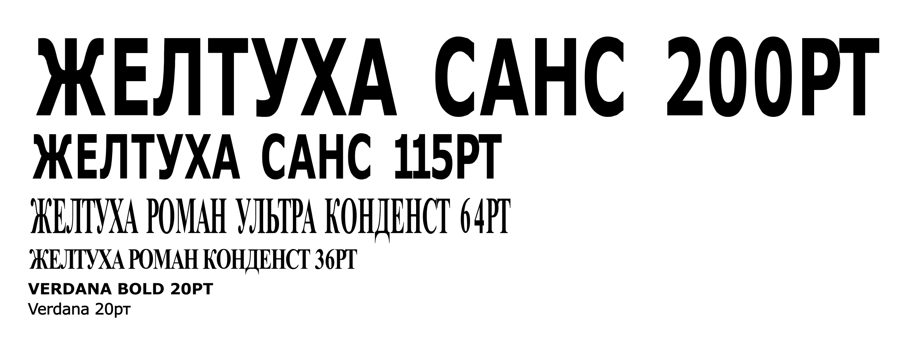
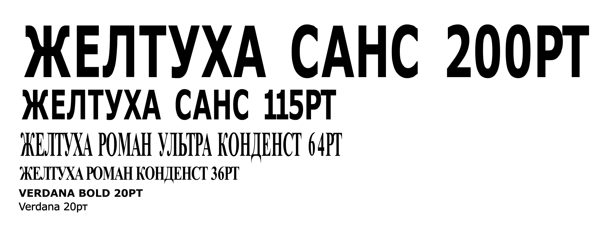
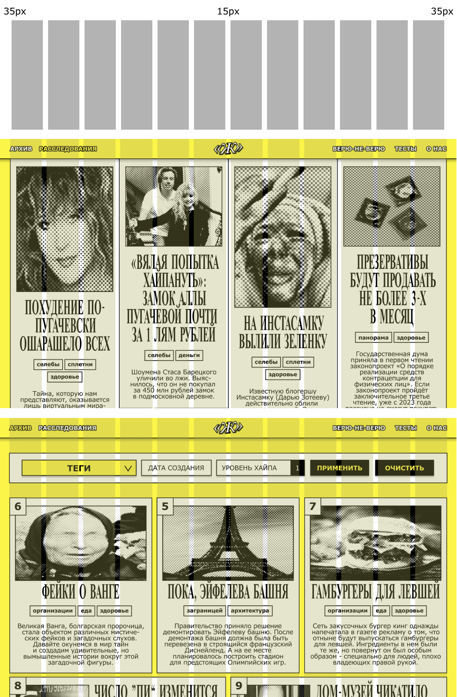
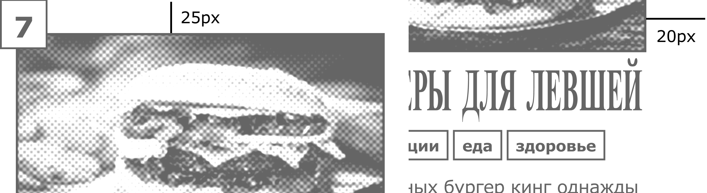
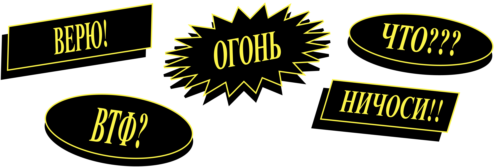

О БРЕНДЕ
КТО МЫ?
Желтуха — это медиа-сервис, посвященный раскрытию и разоблачению дезинформации, которая пестрит в современных новостях. Айдентика основывается на стереотипном оформлении фейковых новостей: растянутые шрифты, броский желтый цвет, кричащие заголовки и искаженные фотографии.
ЦЕННОСТИ
Мы верим в экспертный анализ, критическое мышление, стремление к истине и иронический подход.
ТОН ОФ ВОЙС
Мы любим наших читателей и относимся к ним с уважением. Мы также сильно любим неформальное общение и приколы, поэтому решили объединить официальный язык со слэнгом и стебом.
ЛОГОТИП

Наш логотип — буква «Ж» в кавычках с обводкой и тенью. Кавычки являются метафорой цитаты и общения, а сама Желтуха находится в центре обсуждения, пытаясь выяснить, в чем же истина.
Есть два цветовых варианта логотипа: либо белые символы и черная обводка на желтом фоне, либо желтые символы и черная обводка на белом фоне.

Нельзя использовать шрифт в других цветовых вариациях, начертаниях или как-либо деформировать его.

ЦВЕТА
Цветовая палитра содержит всего три цвета: белый, черный и акцидентный желтый, отсылающий к самой желтухе. Последний используется чаще всего, являясь в основном фоном и разными акцентами, в то время как в белый и черный окрашены текст и графика.

ТИПОГРАФИКА
Типографика — вайжнейший элемент айдентики сервиса. Яркая, намеренно бросающаяся в глаза, она привлекает внимание и служит главной метафорой искажения, «растянутости» информации.
Шрифты были преобразованы вытягиванием Times New Roman и Verdana — чуть ли не самыми базовыми шрифтами, передающими «дешевую» стереотипную эстетику газет и старых сайтов.
 

СЕТКА
Использование 12 колонок в вебе, аналогичное композиции в газетах, предоставляет удобную и гибкую сетку для размещения контента. Эта концепция основана на традиционной газетной вёрстке, где информация структурируется в виде столбцов для легкости восприятия и управления вниманием читателя.
 ГРАФИКА
СТИКЕРЫ
На протяжении всего сервиса встречаются стикеры с разными восклицаниями для поддержания стиля и настроения сервиса.
ФОТО
Фотостиль имитирует старые газетные плохо пропечатавшиеся фотографии. Более того, они так же, как и текст, растянуты.

ГРАФИКА
Графика всегда подчеркивает то, на что нужно обратить внимание. Для этого информация помещается в блоки с толстой обводкой или четкой тенью или ставится на фоне размытых белых фигур.

НОСИТЕЛИ